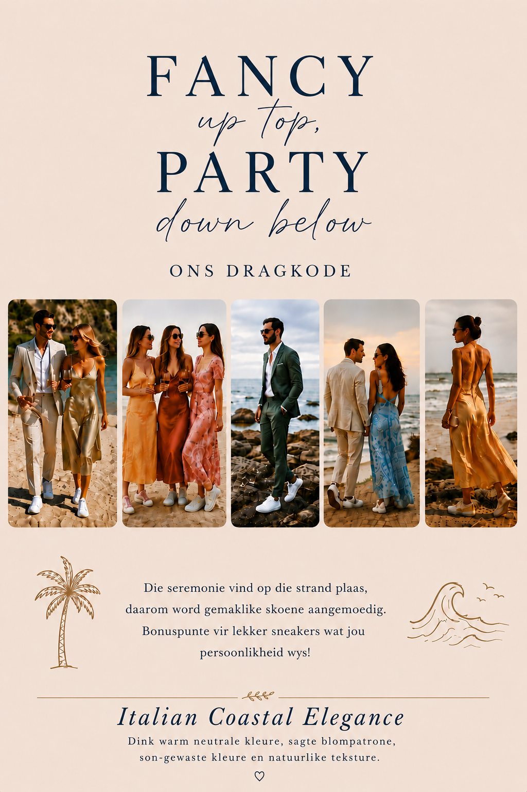

Skedule
Vrydag · 26 Maart
2:00 PM — Aankoms
Gaste is welkom om vanaf 2:00 PM te arriveer.
6:00 PM — Verwelkomingsbraai
Sluit by ons aan vir ’n ontspanne aand van lekker kos, drankies en goeie geselskap terwyl ons die trounaweek saam afskop.
Saterdag · 27 Maart
8:30 AM — Troudag Ontbyt
Gaste word uitgenooi vir 'n ontspanne oggend van lekker kuier en gesels.
4:00 PM — Seremonie
Seremonie, Canapes en Onthaal
Sondag · 28 Maart
8:30 AM — Afskeidsontbyt
’n Ontspanne ontbyt om die naweek saam af te sluit
11:00 AM — Vertrek
Nota
Hou die webwerf dop, die tydlyn sal nader aan tyd meer inligting gee.
Reis en Verblyf
Hoe om daar te kom
Vir gaste wat invlieg, is die naaste lughawe Kaapstad Internasionale Lughawe. Vanaf die lughawe is Lambertsbaai ongeveer 3 ure se ry langs die Weskus. Ons beveel aan dat gaste ’n motor huur of saamry waar moontlik.
Indien genoeg belangstelling op die RSVP vorm aangedui word, sal ons ook ’n shuttle service vanaf Kaapstad reël.
Die rit bied pragtige Weskus-landskappe en is deel van die ervaring van die naweek. Ons sien uit daarna om julle daar te verwelkom!
Verblyf
Daar is meer as genoeg verblyf op die venue vir al die gaste. Finale reëlings sal nader aan die tyd gefinaliseer word.
Vir beplannings- en begrotingsdoeleindes beveel ons aan dat gaste voorsiening maak vir ongeveer R1 500 tot R2 000 per kamer, vir 2 mense , per nag. Die finale bedrag kan effens wissel afhangend van die spesifieke verblyf wat toegeken word.
Die meeste van die verblyfopsies is geprys vir twee persone wat ’n kamer deel. Saterdag en Sondag ontbyt is by die verblyf ingesluit.
Verdere besonderhede sal mettertyd gekommunikeer word.
Kleredrag
Dink Italian Coastal Elegance - ligte materiale, natuurlike teksture, sagte blompatrone en son-gewaste kluere wat pas by 'n ontspanne Weskus-naweek. Die seremonie vind op die strand plaas, daarom word gemaklike skoene aangemoedig.

Sien jou by die Weskus
Sluit by ons aan vir ’n ontspanne trounaweek, omring deur see-uitsigte, heerlike kos en die mense vir wie ons die liefste is.
Gereelde Vrae
Kan ek ’n +1 bring?
Slegs as dit op jou uitnodiging vermeld is.
Is kinders welkom?
Ja, kinders is welkom by die venue. Sien asseblief die RSVP vraag.
Het julle dieetvereistes?
Laat ons asseblief weet op die RSVP as jy ’n spesiale dieet het (bv. vegetarïer, vegan, gluten‑vry).
Wanneer moet ek arriveer / check‑in?
Gaste word vanaf 2:00 PM op 26 Maart 2026 verwelkom.
Is daar parkering by die venue?
Ja — daar is parkering op die perseel. Saamry word aangemoedig waar moontlik.
Is daar ’n shuttle vanaf Kaapstad?
Ons sal ’n shuttle oorweeg indien genoeg gaste dit versoek; merk dit asseblief op jou RSVP.
Waar bly ons oor?
Daar is meer as genoeg verblyf op die venue beskikbaar.
Waar stuur ek geskenke?
Julle teenwoordigheid is vir ons die grootste geskenk. Vir die wat graag iets ekstra wil gee, verkies ons n geldige bydrae wat ons kan gebruik vir ons toekoms saam. Daar sal 'n QR-kode beskikbaar wees vir die wat hiervan gebruik wil maak, maar voel asseblief onder geen verpligting nie.
Wanneer moet ek RSVP?
RSVP asseblief voor die datum wat op die uitnodiging aangedui word sodat ons spyseniering en sitplekke kan reël.